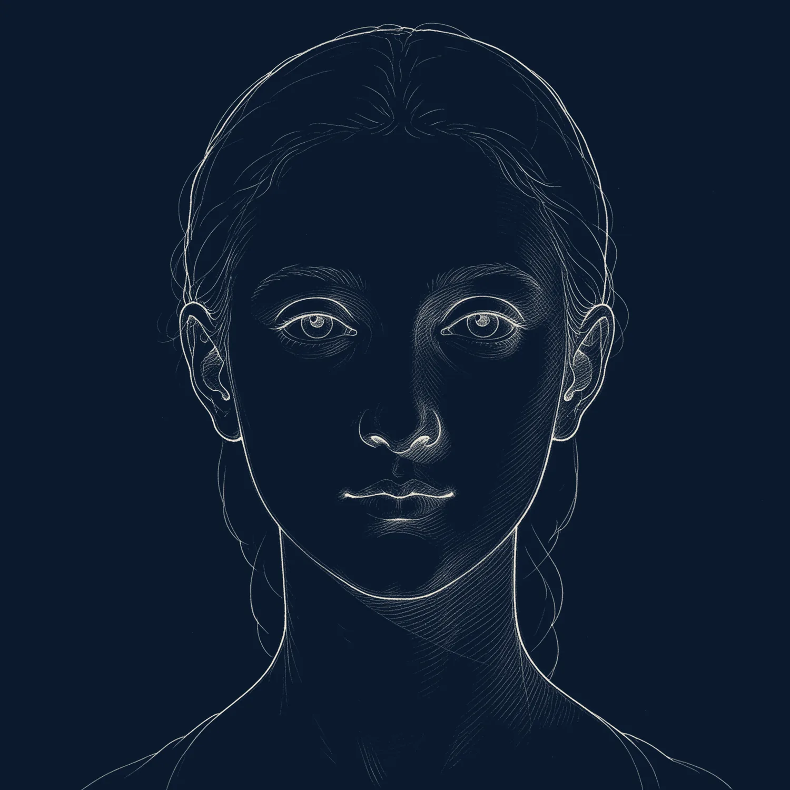

Body contouring and medical weight loss in Kuala Lumpur
DV™ Slim & Sculpt combines fat freezing, muscle toning and skin tightening with, where clinically appropriate, doctor-supervised weight-loss medication such as Mounjaro (tirzepatide) and Wegovy (semaglutide).
Book a consultationTreatment details
As published for the main treatment in this family. Your doctor confirms the plan after assessment.
Devices and medications
Non-surgical contouring refines shape; it is not a weight-loss treatment on its own.
Cryofreeze Clatuu Alpha
360° surround cooling that freezes and removes stubborn fat, comfortable and needle-free.
Learn moreFotona StarFormer, EndyMed, Onda Pro
High-intensity Tesla magnetic stimulation for muscle tone, radiofrequency for loose skin and cellulite, Coolwaves microwaves for localised fat.
Learn moreMounjaro and Wegovy
Prescription weekly injections for patients with a BMI of 30 and above, or 27 and above with a weight-related condition, under medical supervision.
Learn moreWhy choose Da Vinci for body contouring
NPRA-approved medication
Mounjaro and Wegovy are prescribed only after a doctor assesses BMI, history and current medication.
FDA-cleared devices
Clatuu Alpha, StarFormer, EndyMed Pure, BTL Exion and Onda Pro.
Supervised titration
Mounjaro starts at 2.5 mg weekly for four weeks and steps up gradually to a maximum of 15 mg.
No downtime
Device sessions have no downtime; you return to normal activity the same day.
Stubborn fat, loose skin, cellulite and weight management
Best on defined fat pockets in someone near a stable weight, with medication reserved for medical eligibility.
Your treatment journey, step by step
The same four steps at every Da Vinci clinic, so you always know what happens next.

Consultation
A doctor assesses your skin and listens to what you want to improve. No sales consultant.
Skin assessment
Skin analysis and a treatment plan matched to your concern, skin type and lifestyle.
Tailor-made treatment
Pricing explained before anything starts. FDA-cleared devices and authentic injectables only.
Post-treatment care
Aftercare advice, follow-up reviews and BIO.CX375 skincare to protect your results.
Energy, medication, injectables, lifestyle
At least four to five sessions, one month apart.
Scroll to continueStep 1: Energy blend
Cryofreeze Clatuu Alpha, shockwave lipolysis, Fotona StarFormer and EndyMed Pure.
- Clatuu Alpha
- StarFormer
- EndyMed
Step 2: Medications
Weight-loss injection, anti-diabetic medication or appetite suppressants, prescribed only where eligible.
- Mounjaro
- Wegovy
Step 3: Injectables
Mesolipolysis for localised fat.
- Mesolipolysis
Step 4: Post-treatment
Active lifestyle and food diet planning with the team.
- Diet planning
Also: Onda Pro
DEKA Coolwaves microwave technology to contour, firm and reshape without surgery, available at TRX.
- Onda Pro
Frequently asked questions
Answers from the Da Vinci doctors.
Treated fat cells are removed for good; results last when accompanied by a stable weight and healthy lifestyle.
As published by Da Vinci: an estimated RM1,400 to RM1,800 for 2.5 mg and RM1,800 to RM2,200 for 5 mg, varying with dosage, duration and follow-up. A consultation is required.
Typically a BMI of 30 and above, or 27 to 29.9 with at least one weight-related condition. BMI below 27 is usually not eligible for weight-management use.
Common ones include nausea, diarrhoea, reduced appetite and fatigue, usually mild and temporary. Severe abdominal pain, persistent vomiting or allergic reaction need medical attention.
Yes, at Mid Valley, Bukit Jalil, Cheras and TRX, after consultation.
Some results are visible immediately; fat-freezing results develop over the following weeks as the body clears treated cells.
Skin and aesthetic insights
View allXERF vs Ultherapy Prime: which should you choose?
Both lift and tighten without surgery. One uses dual-frequency radiofrequency, the other micro-focused ultrasound with real-time imaging. Here is how our doctors decide.
Can early acne scar treatment prevent bigger scars?
Why treating active acne and fresh scars early tends to mean fewer sessions later.
Stem cell therapy for hair vs skin: key differences
The same regenerative idea, two very different treatment plans.
How often should you get professional hair treatment?
Session spacing for Fotona HAIRestart, polynucleotides and exosome therapy.
Start your beauty journey today
Every treatment begins with an honest clinical consultation at any of our four Kuala Lumpur clinics. No pressure, no upselling.
Book a consultation